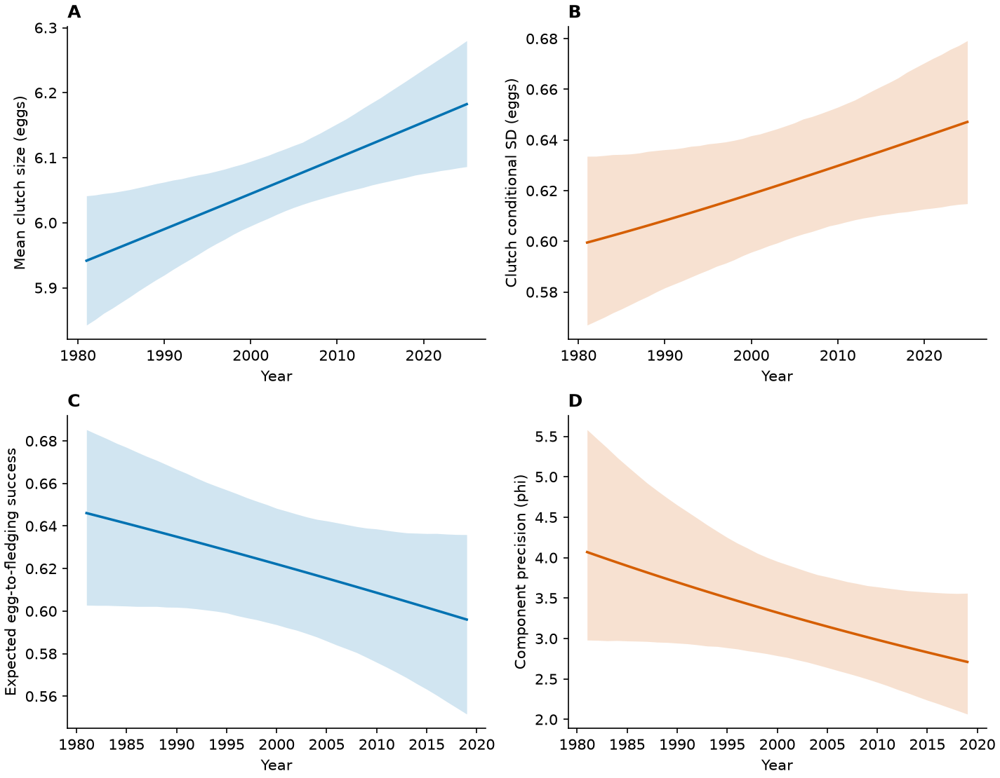
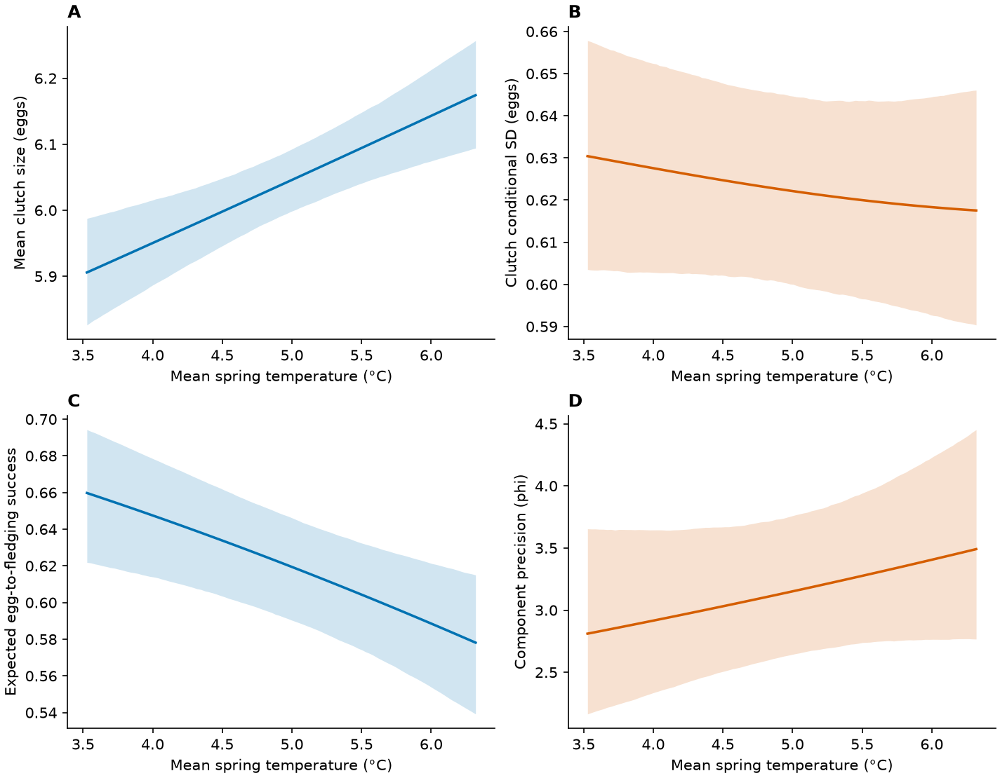
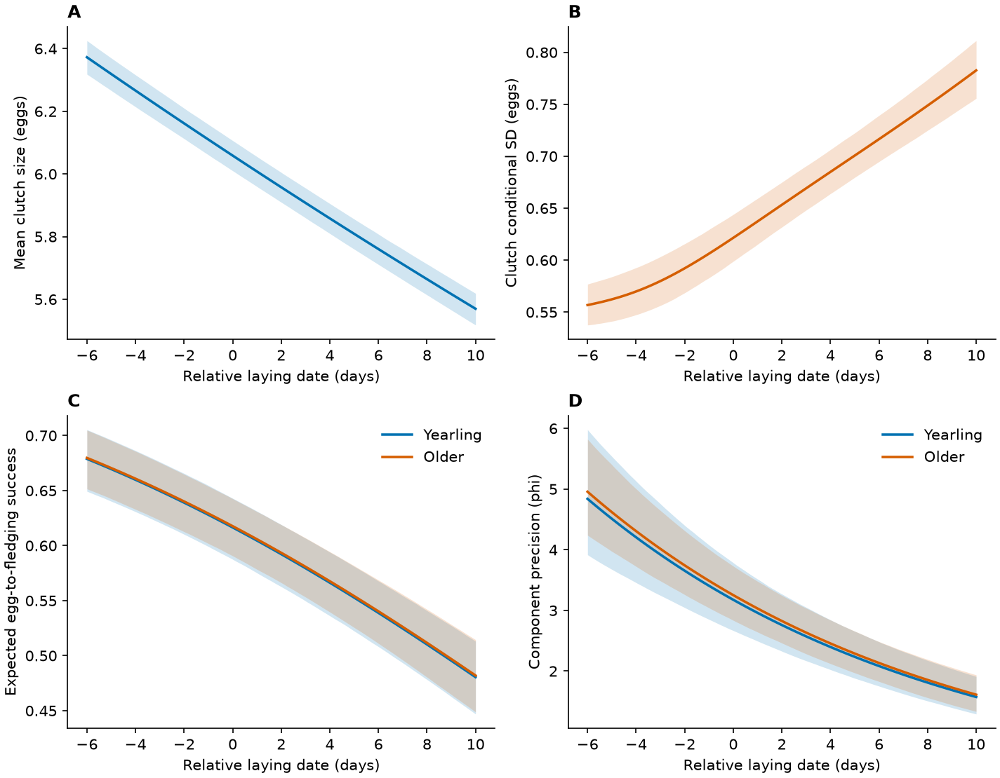
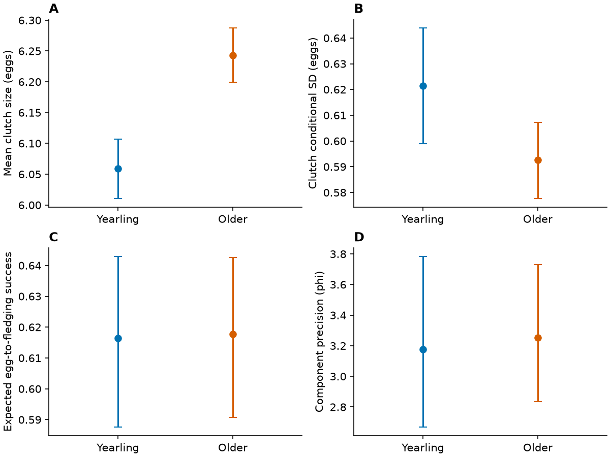
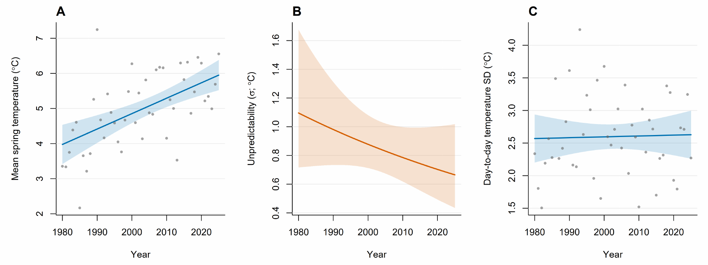

Figure code
Files and packages
Download the repository ZIP. The scripts read CSV prediction tables in tables/ and write figures to figures/; no model fitting is required. Python packages: pandas, matplotlib (and their dependencies).
Calendar-year trends
Show original code: plot_temporal_models.py
scripts/plot_temporal_models.py
"""Render temporal trends without temperature; retain original age estimates."""
from pathlib import Path
import pandas as pd
import matplotlib
matplotlib.use('Agg')
import matplotlib.pyplot as plt
root=Path(__file__).resolve().parent.parent
figdir=root/'figures';T=root/'tables/temporal_models_20261022';C=root/'tables/final_models_20261019'
plt.rcParams.update({'font.size':10,'axes.spines.top':False,'axes.spines.right':False,'pdf.fonttype':42})
blue='#0072B2';orange='#D55E00'
def curve(ax,path,label,color,percentage=False):
d=pd.read_csv(path);scale=100 if percentage else 1
ax.plot(d.x,d.estimate*scale,color=color,lw=1.7)
ax.fill_between(d.x,d.CI_low*scale,d.CI_high*scale,color=color,alpha=.18,lw=0)
ax.set(xlabel='Year',ylabel=label)
def age(ax,path,label):
d=pd.read_csv(path)
for i,(cl,col) in enumerate([('YOUNG',blue),('OLD',orange)]):
z=d[d.age_class==cl].iloc[0]
ax.errorbar(i,z.estimate,yerr=[[z.estimate-z.CI_low],[z.CI_high-z.estimate]],fmt='o',color=col,capsize=4)
ax.set(xticks=[0,1],xticklabels=['Yearling','Older'],ylabel=label,xlim=(-.6,1.6))
fig,axes=plt.subplots(2,2,figsize=(9.5,7.4),layout='constrained')
curve(axes[0,0],T/'clutch_year_mean.csv','Mean clutch size (eggs)',blue)
curve(axes[0,1],T/'clutch_year_sd.csv','Clutch-size SD (eggs)',orange)
curve(axes[1,0],T/'fledging_year_success.csv','Expected egg-to-fledging success',blue)
axes[1,0].set_ylim(0,1)
curve(axes[1,1],T/'fledging_year_phi.csv','Fledging reproductive consistency (φ)',orange)
for ax,l in zip(axes.flat,'ABCD'):ax.set_title(l,loc='left',fontweight='bold')
for ext in ['pdf','png']:fig.savefig(figdir/f'Fig4_COM_M1_time.{ext}',dpi=180)
plt.close(fig)
fig,axes=plt.subplots(2,2,figsize=(9.5,6.5),layout='constrained')
curve(axes[0,0],T/'clutch_year_mean.csv','Mean clutch size (eggs)',blue)
curve(axes[0,1],T/'fledging_year_success.csv','Expected egg-to-fledging success (%)',blue,True)
axes[0,1].set_ylim(0,100)
age(axes[1,0],C/'COM_age_mean.csv','Mean clutch size (eggs)')
age(axes[1,1],C/'COM_age_sd.csv','Clutch-size SD (eggs)')
for ax,l in zip(axes.flat,'ABCD'):ax.set_title(l,loc='left',fontweight='bold')
for ext in ['pdf','png']:fig.savefig(figdir/f'Fig5_concise_clutch.{ext}',dpi=180)
plt.close(fig)
print('Temporal figures generated from models without temperature; age predictions retained unchanged.')Show command
python scripts/plot_temporal_models.py
Temperature, date and age
Show original code: plot_final_models.py
scripts/plot_final_models.py
from pathlib import Path
import sys
P=Path(__file__).resolve().parent.parent/'figures'
import pandas as pd
import matplotlib
matplotlib.use('Agg')
import matplotlib.pyplot as plt
C=P.parent/'tables/final_models_20261019'; F=P.parent/'tables/primary_ZIyear_ML_20261021'
plt.rcParams.update({'font.size':10,'axes.spines.top':False,'axes.spines.right':False,'pdf.fonttype':42})
blue='#0072B2';orange='#D55E00'
def curve(ax,d,label,xlabel,col):
ax.plot(d.x,d.estimate,color=col,lw=1.7)
ax.fill_between(d.x,d.CI_low,d.CI_high,color=col,alpha=.18,lw=0)
ax.set(xlabel=xlabel,ylabel=label)
for kind,name,xlabel in [('temperature','Fig3_COM_M1_temperature','Mean spring temperature (°C)'),('year','Fig4_COM_M1_time','Year'),('date','Fig5_COM_M1_date','Relative laying date (days)')]:
if kind=='year':
# Dedicated temporal refits omit temperature in both model equations.
import runpy
runpy.run_path(str(Path(__file__).with_name('plot_temporal_models.py')),run_name='__main__')
continue
fig,ax=plt.subplots(2,2,figsize=(9.5,7.4),layout='constrained')
for j,comp in enumerate(['mean','sd']):
curve(ax[0,j],pd.read_csv(C/f'COM_{kind}_{comp}.csv'),['Mean clutch size (eggs)','Clutch conditional SD (eggs)'][j],xlabel,[blue,orange][j])
for j,comp in enumerate(['success','phi']):
d=pd.read_csv(F/f'ZIyear_{kind}_{comp}.csv')
if kind=='temperature':d.x+=5.098595980711215
label=['Expected egg-to-fledging success','Component precision (phi)'][j]
if kind=='date':
for age,col in [('YOUNG',blue),('OLD',orange)]:curve(ax[1,j],d[d.age_class==age],label,xlabel,col)
ax[1,j].legend(ax[1,j].lines,['Yearling','Older'],frameon=False)
else:curve(ax[1,j],d,label,xlabel,[blue,orange][j])
for a,l in zip(ax.flat,'ABCD'):a.set_title(l,loc='left',fontweight='bold')
fig.savefig(P/(name+'.pdf'));fig.savefig(P/(name+'.png'),dpi=150);plt.close(fig)
fig,ax=plt.subplots(2,2,figsize=(8,6),layout='constrained')
for a,d,label,l in zip(ax.flat,[pd.read_csv(C/'COM_age_mean.csv'),pd.read_csv(C/'COM_age_sd.csv'),pd.read_csv(F/'ZIyear_age_success.csv'),pd.read_csv(F/'ZIyear_age_phi.csv')],['Mean clutch size (eggs)','Clutch conditional SD (eggs)','Expected egg-to-fledging success','Component precision (phi)'],'ABCD'):
for i,age in enumerate(['YOUNG','OLD']):
z=d[d.age_class==age].iloc[0];a.errorbar(i,z.estimate,yerr=[[z.estimate-z.CI_low],[z.CI_high-z.estimate]],fmt='o',color=[blue,orange][i],capsize=4)
a.set(xticks=[0,1],xticklabels=['Yearling','Older'],ylabel=label,xlim=(-.6,1.6));a.set_title(l,loc='left',fontweight='bold')
fig.savefig(P/'Fig6_COM_M1_age.pdf');fig.savefig(P/'Fig6_COM_M1_age.png',dpi=150)
print('Four primary ML COM-Poisson / M1 figures generated from archived prediction tables.')Show command
python scripts/plot_final_models.pyTemperature

Relative laying date

Female age

Spring-temperature figure
Show retained R plotting block
This block uses annual, plot_data and scale_data produced by the temperature-model code. It draws the mean and residual-SD panels. The saved publication image also includes a within-window daily-SD panel; the code for assembling that extra panel is not retained here.
R/25_environment_temperature_location_scale.R — plotting excerpt
blue <- "#0072B2"
p <- ggplot(annual, aes(year, temp_mean)) +
geom_ribbon(data = plot_data, aes(x = year, ymin = CI_low, ymax = CI_high),
inherit.aes = FALSE, fill = scales::alpha(blue, 0.20)) +
geom_line(data = plot_data, aes(x = year, y = estimate), inherit.aes = FALSE,
colour = blue, linewidth = 1) +
geom_point(shape = 21, fill = "white", colour = "grey25", size = 2.2,
stroke = 0.55) +
scale_x_continuous(breaks = seq(1980, 2025, by = 5)) +
labs(x = "Year", y = "Mean spring temperature (°C)",
subtitle = "Thermal window: 26 March-7 May") +
theme_classic(base_size = 11) +
theme(axis.title = element_text(face = "bold"),
panel.grid.major.y = element_line(colour = "grey92", linewidth = 0.3))
ggsave("figures/environment_temperature_time.png", p, width = 7.2, height = 4.8, dpi = 400)
ggsave("figures/environment_temperature_time.pdf", p, width = 7.2, height = 4.8,
device = cairo_pdf)
p_scale <- ggplot(scale_data, aes(year, sigma)) +
geom_ribbon(aes(ymin = CI_low, ymax = CI_high), fill = orange <- "#D55E00", alpha = 0.2) +
geom_line(colour = orange, linewidth = 1) +
labs(x = "Year", y = "Interannual residual SD (σ)") + theme_classic(base_size = 11)
combined <- (p + labs(subtitle = NULL)) + p_scale +
plot_annotation(tag_levels = "A")
ggsave("figures/Fig2_temperature_location_scale_time.png", combined,
width = 8.4, height = 4.2, dpi = 400)
ggsave("figures/environment_temperature_scale.png", p_scale,
width = 6.4, height = 4.8, dpi = 400)